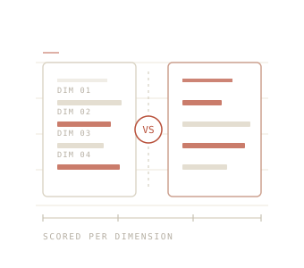

Dimension by dimension
Each row is judged on its own. A tool can win on price and lose on reliability without us averaging it into a fake score.
Side by side
Most "X vs Y" pieces pick a winner in the headline and spend the rest of the page defending it. We score each dimension separately, so you can see that one tool wins on cost while losing badly on something else — and decide which of those matters to you.

The deep closed agent that handles the hard work, against the open model that costs a fraction and runs on your own hardware. Where each wins, and how to route between them.
29 October 2026 ComparisonThe live-signal specialist against the broader generalist. Where each one actually wins, and why the choice is about the job, not the leaderboard.
29 October 2026 ComparisonHalf the price, or the better AI. Copilot is the cheaper default, Cursor the stronger editor, and why most teams should start on the cheap one.
29 October 2026 ComparisonOne looks better, one is more right. Where the two most-searched image generators win on a real task, and what each one costs.
29 October 2026 ComparisonBetter brains, half the tokens, and the reason the 2026 consensus is to run both. Where each one wins on a real task.
29 October 2026 ComparisonWorkspace context against raw capability. Full Notion AI now sits in the $20 Business seat, not the $10 add-on most comparisons still quote.
29 October 2026 ComparisonTwo ways to generate images: ChatGPT's free, in-chat convenience against Midjourney's aesthetic lead. Where each wins, and which to open first.
26 October 2026 ComparisonThe AI-first editor against the terminal agent. Where Cursor's everyday editing wins, and where Claude Code takes the big refactors.
26 October 2026 ComparisonTwo open-weights Chinese giants: DeepSeek's reasoning and price against Qwen's breadth and multilingual reach. Where each one is the better call.
26 October 2026 ComparisonOne genuine advantage — live knowledge from X — and everything else. Where recency is worth the premium.
22 October 2026 ComparisonThe answer engine that cites everything, against the assistant that makes things. Two jobs, not one winner.
22 October 2026 ComparisonOpen weights and a fraction of the price, against the stronger agent story. A cost argument in capability clothing.
22 October 2026 ComparisonThe two strongest consumer assistants. Where the free tier decides it, and where the ecosystem does.
22 October 2026 ComparisonReasoning, coding, cost, context window — and which one fits the work you do all day.
22 October 2026Each row is judged on its own. A tool can win on price and lose on reliability without us averaging it into a fake score.
"Better" depends entirely on what you're doing. We give different answers for different kinds of work.
Headline prices are close to meaningless. We work out what you'd actually pay at the volume you'd use it.
Tell us which two tools you're weighing up and what you'd be using them for. That context genuinely changes the answer, and it helps us decide what to compare next.